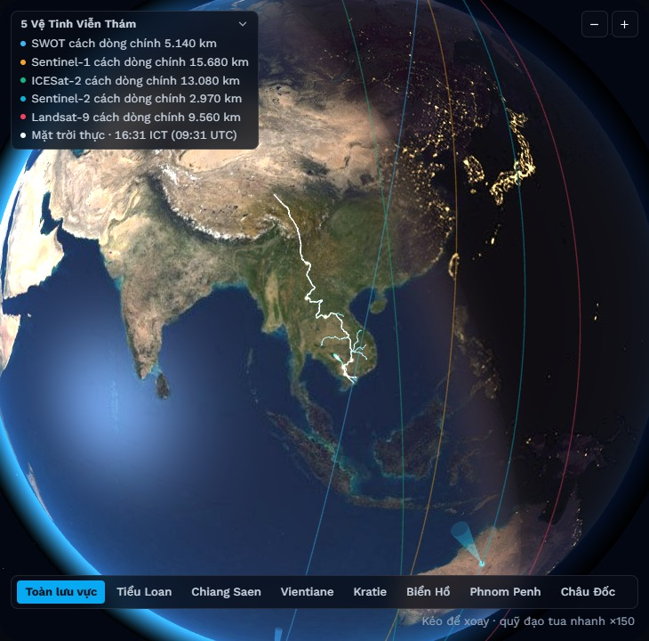
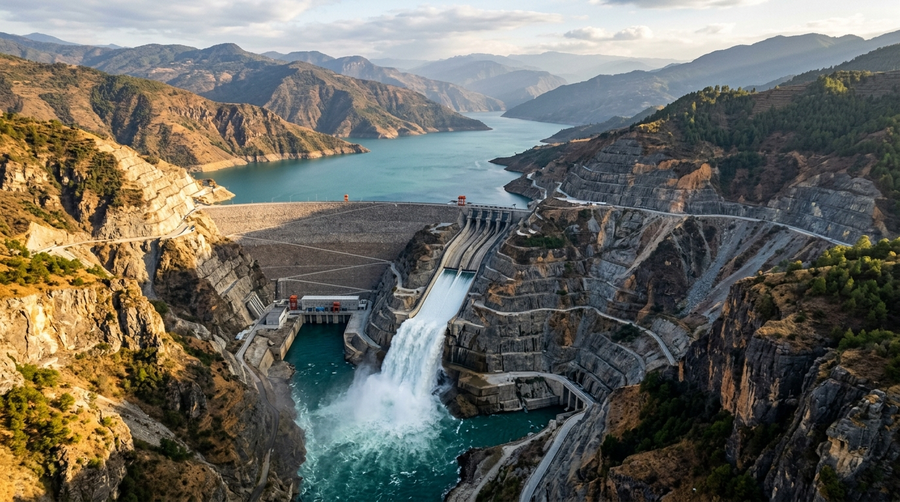

One river, 4,350 km, from the Lancang gorges to the delta. Satellite altimetry, radar and gauge records, closed in a single water balance.

Over 4,350 km the Mekong changes character four times: regulated gorge, free-flowing valley, flood-pulse lake and tidal delta.

Xiaowan (292 m arch dam) and Nuozhadu (261.5 m embankment dam) turn a flashy monsoon hydrograph into a steadier one.
Three branches are open now, each with its own workspace on verified data. Ten more are in preparation.
Water level (stage, Z), storage (volume, V) and outflow (discharge, Q) for three verified dams: Jinghong, Nuozhadu and Ialy.
Satellite rainfall (GPM IMERG, CHIRPS, GSMaP, ERA5-Land) bias-corrected against rain gauges for the Sê San and Srepok basins.
Lake level (stage, WSE), storage and exchange flow at Chaktomuk, from SWOT, ICESat-2 and Sentinel-1.
Verified dams, calibrated basins, the Tonle Sap and three reference gauges. Select a row to fly the globe to that station.
| ID | Station | Location | River km | Water level Z (m) | Flow Q (m³/s) · Area · Volume | Status |
|---|---|---|---|---|---|---|
| B01-01 | Jinghong dam | Lancang, China | 2,080 | 599.25 | 1,943 | Verified · v5.7 |
| B01-02 | Nuozhadu dam | Lancang, China | 1,820 | 798.42 | 1,313 | Verified · v6.5 |
| B01-03 | Ialy dam (Yali Falls) | Sê San River, Vietnam | 3,680 | 514.13 | 301 | Verified · v5.5 |
| B02-01 | Sê San basin | Gia Lai, Kon Tum · Ratanakiri | 3,230 | – | 19,000 km² | Calibrated · 3-layer bias correction |
| B02-02 | Srepok basin | Đắk Lắk, Đắk Nông · Mondulkiri | 3,230 | – | 31,000 km² | Calibrated · 3-layer bias correction |
| B03-01 | Kompong Luong (Tonle Sap) | Tonle Sap, Cambodia | 3,880 | 9.11 | 58.82 km³ | Operational · SWOT + ICESat-2 |
| B03-02 | Chaktomuk junction (Phnom Penh) | Phnom Penh, Cambodia | 3,920 | 8.95 | 7,033 | Operational · Sentinel-1 SAR |
| REF-01 | Kratie | Mekong, Cambodia | 3,750 | 18.40 | 14,820 | MRC gauge |
| REF-02 | Tan Chau (Tien River) | Mekong Delta, Vietnam | 4,110 | 3.45 | 12,400 | MRC mainstem gauge |
| REF-03 | Chau Doc (Bassac River) | Mekong Delta, Vietnam | 4,115 | 3.12 | 6,280 | MRC mainstem gauge |
Reservoirs, rainfall and the Tonle Sap in one multi-window workspace.